Minério raro que aparece sozinho nas profundezas (camada -64 a -50). Precisa de picareta de ferro; com picareta de diamante solta Orbes de Mana (Fortuna aumenta). Com Toque Suave, solta o próprio bloco.
Como obter
Encontrado nas profundezas do mundo.
Nature Infuser
Transforma itens usando energia de natureza: ligue com Cabos de Natureza num Nature Charger ou numa bateria. Sem energia não funciona (a tela mostra "Sem energia!"). Gasta 60 de energia por tick de trabalho (guarda 30.000). Entrada em cima, alimentação embaixo (o catalisador da infusão) e saída à direita. Funis: entrada por cima, alimentação pelos lados, saída por baixo.
Bancada de trabalho
➜
Bônus da natureza
Com energia, a força base é 1x. A natureza num raio de 5 blocos (inclusive acima e abaixo) acelera: cada tipo soma até um limite; terra comum não conta.
Bloco
Limite
Força máxima
Grama
25
+1x
Flores
5
+0,25x
Folhas de árvore
15
+0,25x
Pedestal com folhas
1
+0,5x
Colmeia
1
+0,25x
Todas as infusões
Entrada
Alimentação
Resultado
Diamante
combustível vegetal
Cristal Instável
Molde de melhoria de netherita
Essência de Mana
Molde de Manilium
Peça de Manilium
Orbe de Mana
+1 de defesa (até +5)
Espada de Manilium
Orbe de Mana
+1 de dano (sem limite)
Espada de Manilium (vazia)
Bloco Mágico
bloco na guarda da espada
Qualquer peitoral
Conversor de Almas
peitoral com conversor
Spawner sem Vida
Barra de Manilium
Spawner de Manilium
Bloco de Água
Gelo Azul
Bloco de Gelo
Bloco de Fogo
Bloco de Redstone
Bloco de Fogo Vermelho
Bloco de TNT
TNT
Bloco de TNT Ativo
Energia
A barra à direita guarda energia de natureza vinda de um Nature Charger. O infusor só trabalha com energia; a natureza em volta deixa mais rápido. Sem energia ele pausa (não perde o progresso).
Nature Charger
Um ninho de raízes e troncos com um grande cristal verde que pulsa no meio e uma copa de folhas em cima. Gera energia de natureza só de estar no ambiente: não precisa de itens, basta ter natureza (grama, flores, folhas, colmeias...) 2 blocos para cada lado (um cubo de 5x5x5 com ele no meio; 25 blocos de grama já dão o máximo da grama). As áreas de dois carregadores não podem se sobrepor, mas podem encostar: 5 blocos de centro a centro (X X C X X X X C X X). Segurando um Charger, as áreas dos que estão por perto aparecem em verde e a do novo, onde você vai colocar, em amarelo (vermelho se invadiria outra). Olhar para um Charger, Infuser, Grower, Poço de Mana, Minerador ou máquina nova também mostra a área dele. Quanto mais natureza, mais rápido gera (o cristal no meio da tela acende enquanto gera). Guarda até 20.000. A energia vai pelos Cabos de Natureza (ou direto para um infusor encostado).
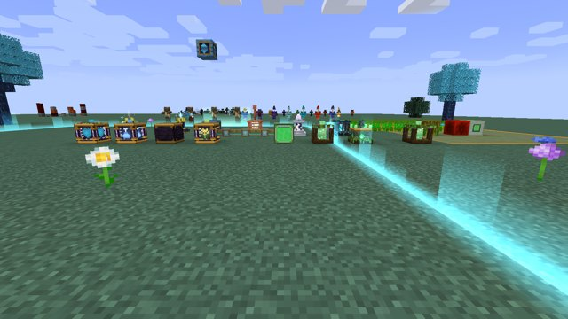
Um jardim de máquinas de natureza ligadas pelos cabos
Bancada de trabalho
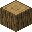
➜
Infusor com energia
O Nature Infuser precisa de energia para funcionar: com energia trabalha a 1x, mais o bônus da natureza em volta. Gasta 60 de energia por tick de trabalho e guarda até 30.000. Sem energia ele só pausa (não perde o progresso).
Cabo de Natureza
Leva a energia de natureza dos Chargers, geradores (Almas, Pilar Lunar, Captador de Raios) e Baterias até as máquinas: Infuser, Grower, Minerador, Altar de Rituais, Mesa de Maestria, Aprimorador de Encantamentos, Fornalha Natural e as máquinas de natureza. Conecta sozinho em qualquer direção (até 256 cabos por rede).
Bancada de trabalho
➜x8
Nature Grower
Usa a energia de natureza (vinda do Nature Charger pelos cabos) para acelerar as plantas num raio de 4 blocos: plantações, mudas, cana, cacto, bambu, fungos, flores... A cada meio segundo cada planta tem 50% de chance de crescer um passo, e às vezes ganha farinha de osso de graça. Gasta 40 de energia por tick, só quando há plantas em volta. Clique nele para ver a energia.
Bancada de trabalho
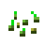
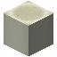
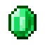
➜
Enchant Upgrader
Uma mesa de encantamento melhorada que aumenta o nível dos encantamentos com MUITA energia de natureza (pelos Cabos de Natureza). Coloque um item ou livro encantado, clique no encantamento na lista e espere: o livro abre e vira as páginas enquanto trabalha. Ele continua subindo o nível enquanto houver energia.
Bancada de trabalho
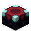
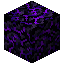
➜
Nível
Energia
Extra
Até o máximo do Minecraft
4.000 × nível²
—
Acima do máximo (até 10)
7.000 × nível²
1 Orbe de Mana + 1 Essência do Void por nível
Leva pelo menos 20s + 10s por nível; sem energia ele pausa. Exemplo: Afiação V → VI custa 252.000 de energia. Encantamentos de 1 nível só (Remendo, Toque Suave...) não sobem.
Nature Restorer
Conserta sozinho as ferramentas, armas e armaduras colocadas nos seus 9 espaços usando energia de natureza (pelos cabos): 20 de energia por ponto de durabilidade, um item por vez (na ordem dos espaços). Shift + clique mostra a energia guardada.
Bancada de trabalho
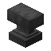
➜
Poço de Mana
Com energia de natureza (pelos cabos), a cada 6 segundos devolve 1 de mana aos jogadores a até 6 blocos que não estão cheios. Custa 4.000 de energia por ponto. Também recarrega as Orbes de Mana Condensada Estabilizadas jogadas em cima dele: +1 de mana por segundo, 3.000 de energia cada. Clique para ver a energia.
Bancada de trabalho
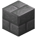
➜
Altar de Rituais
O centro dos rituais. Monte 4 Pedestais a 3 blocos do altar (norte, sul, leste e oeste, na mesma altura) e ligue o altar à energia de natureza pelos cabos (guarda 40.000). Clique no altar com o catalisador, coloque os 4 itens nos pedestais (em qualquer ordem) e clique no altar de mão vazia. Por 5 segundos, raios de luz saem dos pedestais até o altar; no fim, os itens são gastos e um raio (sem dano) cai no altar. Shift + direito de mão vazia tira o catalisador.
Bancada de trabalho
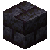
➜
Como montar
Coloque o Altar e ligue-o à energia (cabos de um Charger, gerador ou bateria).
Coloque 4 Pedestais (comuns ou Arcanos) a 3 blocos do altar: norte, sul, leste e oeste, na mesma altura do altar (2 blocos vazios entre o altar e cada pedestal).
Clique no altar segurando o catalisador (ele fica flutuando em cima).
Clique em cada pedestal segurando um dos 4 itens do ritual (qualquer ordem).
Clique no altar de mão vazia. Se aparecer "nenhum ritual usa esses itens", confira os itens; "faltam pedestais" = algum pedestal fora do lugar.
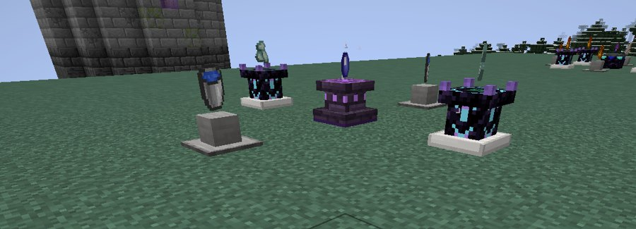
Altar com os 4 pedestais
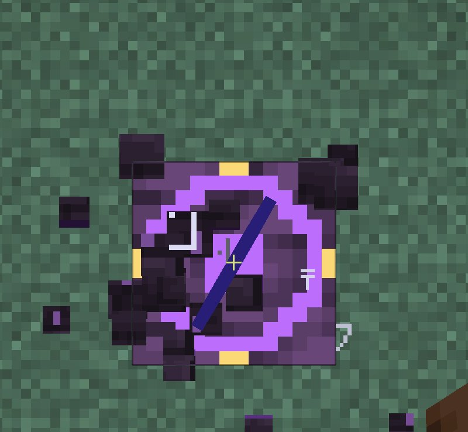
Visto de cima: pedestais a 3 blocos, em cruz
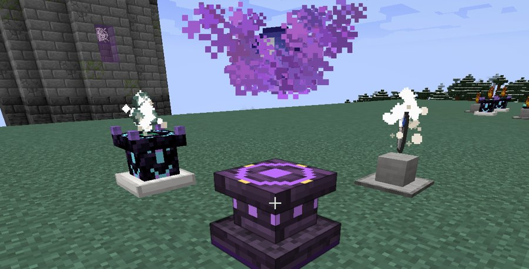
Ritual em andamento
Ritual
Catalisador (no altar)
Pedestais
Energia
Efeito
Chuva
Orbe de Mana
2 Baldes de Água + 2 Cristais de Prismarinho
5.000
Chove por 10 minutos (os baldes voltam vazios)
Céu Limpo
Orbe de Mana
2 Girassóis + 2 Pó de Pedra Luminosa
5.000
Para a chuva e, se for noite, pula para a manhã
Tempestade
Orbe de Mana
2 Para-raios + 2 Pólvoras
8.000
Tempestade com raios por 5 minutos
Lua Roxa
Olho do Ender
2 Fragmentos de Ametista + 2 Essências de Mana
15.000
Chama a Lua Roxa agora (se for noite) ou na próxima noite
Eclipse Solar
Fragmento Lunar
2 Girassóis + 2 Obsidianas
15.000
Chama o Eclipse Solar agora (se for dia) ou no próximo meio-dia
Transmutação
Diamante
2 Essências de Mana + 2 Esmeraldas
6.000
2 Diamantes Instáveis
Bênção
Maçã Dourada
Essência de Mana + Pó de Blaze + Pena + Açúcar
8.000
Força II, Velocidade II, Regeneração e Resistência por 5 min para todos a até 12 blocos
Conhecimento
Livro
2 Fragmentos Lunares + 2 Orbes de Mana
20.000
+1 ponto de habilidade para quem começou o ritual
Invocação do Golem
Um Bloco Mágico (não é gasto)
2 Orbes de Mana + 2 Diamantes Instáveis
20.000
Cria o Invocador do golem daquele elemento: coloque onde quiser para lutar com ele
Minerador da Natureza
Uma máquina movida a energia de natureza (pelos cabos, guarda 40.000) que minera uma área de 9x9 embaixo dela, ou o retângulo formado pelos Marcadores de Área (até 64x64), camada por camada, até o fundo do mundo: um bloco a cada 0,2s, 250 de energia por bloco, como uma picareta de diamante. Pula líquidos, blocos inquebráveis e blocos com inventário (baús, spawners...). Os itens vão para um baú encostado em qualquer lado; sem baú, ela guarda até 27 pilhas e pausa. Só trabalha com sinal de redstone (alavanca, tocha de redstone, botão... encostado). A área que vai ser minerada aparece sempre: uma caixa 9x9 do Minerador até a camada atual, com a camada sendo minerada destacada (verde = minerando, laranja = parado sem sinal ou sem energia, cinza = terminou). Não mina dentro da arena de um golem vivo.
Bancada de trabalho
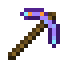
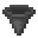
➜
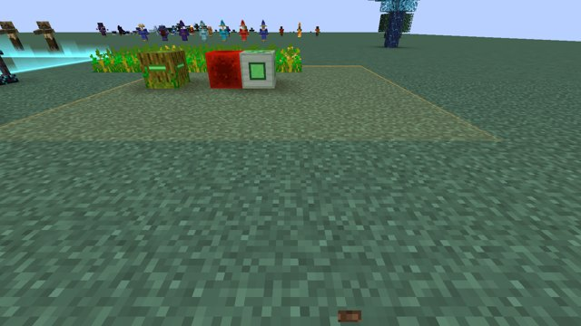
Minerador ligado na redstone: a área aparece no chão
Ação
Efeito
Direito
Mostra o estado, a camada e a energia; entrega os itens guardados
Sinal de redstone
Liga (sem sinal fica parado)
Shift + direito (mão vazia)
Recalcula a área pelos marcadores e recomeça do topo
Marcador de Área
Uma tocha com cristal verde que marca a área do Minerador da Natureza. Coloque nos cantos da área (até 64 blocos do Minerador e na mesma altura, até 2 acima ou abaixo): o Minerador usa o retângulo formado pelos marcadores, até 64x64 (com um só marcador, o retângulo entre ele e o Minerador). A área é escolhida quando ele começa a minerar e aparece sempre no mundo; os marcadores não são minerados. Se passar de 64x64, ele avisa e usa a área padrão 9x9. A área começa na altura do Minerador e desce.
Bancada de trabalho
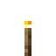
➜x4
Árvore de Mana
Infunda qualquer muda com Essência de Mana no Nature Infuser. Plante e use farinha de osso: cresce uma árvore grande de madeira azul e folhas que brilham e soltam faíscas de mana. As folhas dão mudas e Frutas de Mana; o tronco vira Tábuas de Mana (valem como tábuas em qualquer receita).
Nature Infuser
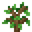
+
➜
em cima: entrada · embaixo: alimentação
Bancada de trabalho
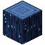
➜
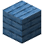
x4
Coletor de Colheita
Colhe e replanta sozinho tudo o que estiver maduro num raio de 5 (de 2 abaixo até 2 acima): plantações, verrugas do Nether, cacau, frutas vermelhas, melancias, abóboras, cana, cacto e bambu (a base fica). A semente do replantio sai da própria colheita. Os itens vão para um baú encostado. 150 de energia por colheita.
Bancada de trabalho
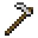
➜
Criador Automático
Alimenta os animais adultos num raio de 5 com a comida de um baú encostado (trigo, cenoura, sementes... o que cada animal come) para eles cruzarem sozinhos. Para quando houver 24 animais na área. 250 de energia por animal.
Bancada de trabalho
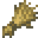
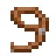
➜
Fornalha Natural
Uma fornalha com a mesma tela da comum. Com energia de natureza pelos cabos ela fica acesa sem combustível e cozinha 2x mais rápido (12 de energia por tick = 1.200 por item, só quando tem algo para cozinhar). Sem energia funciona com combustível normal.
Bancada de trabalho
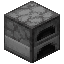
➜
Destilador de Mana
Transforma energia de natureza em Essência de Mana: 20.000 de energia (40 segundos) por essência. Manda para um baú encostado ou guarda até você clicar.
Bancada de trabalho
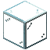
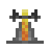
➜
Escudo de Área
Protege uma área quadrada de 25x25 (12 blocos para cada lado). A borda aparece no chão como uma faixa de luz, acompanhando o terreno, igual aos anéis de fogo do golem. Escudos com áreas que se encostam ou se cruzam se fundem: aparece só o contorno de fora e os monstros são empurrados para fora do conjunto inteiro. Clique no bloco com um corante para mudar a cor do emblema e da área. O escudo destrói projéteis que não são de jogadores (flechas de esqueleto, bolas de fogo, disparos dos espíritos...) e empurra os monstros para fora. Não afeta chefes. 150 de energia por projétil e 20 por empurrão.
Bancada de trabalho
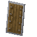
➜
Gerador de Almas
Fonte de energia: cada criatura que morre a até 10 blocos gera 40 de energia por ponto de vida máxima (até 3.000 por morte; um zumbi dá 800). Ótimo embaixo de uma fazenda de monstros. Manda a energia pelos cabos (até 800 por tick) para máquinas e baterias.
Bancada de trabalho
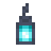
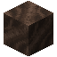
➜
Pilar Lunar
Fonte de energia noturna: com céu aberto, gera 20 por tick à noite e 60 na Lua Roxa. De dia não gera.
Bancada de trabalho
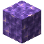
➜
Captador de Raios
Fonte de energia de tempestade: guarda 60.000 de energia cada vez que um raio natural de tempestade cai a até 4 blocos (raios do Bloco do Trovão e de tridentes com Canalização não contam). Coloque um para-raios em cima para atrair os raios (o Ritual da Tempestade ajuda). Guarda até 200.000.
Bancada de trabalho
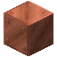
➜
Torre de Cristal
Uma defesa movida a natureza: base de pedra escura com ouro, coluna de obsidiana e garras douradas segurando um cristal que flutua e gira. A cada segundo dispara um Míssil Arcano no monstro mais perto que ela enxerga (até 16 blocos): 5 de dano mágico. 300 de energia por tiro (guarda 30.000). Os mísseis da torre nunca acertam jogadores, animais nem aldeões. Indicador de energia: 4 runas no degrau da base ficam verdes pulsando com energia e vermelhas piscando sem energia (o cristal também fica avermelhado e fraco).
Bancada de trabalho
➜
Elevador de Mana
Bloco de madeira de mana com setas que brilham e um círculo de runas em cima. Coloque vários na mesma coluna (até 32 blocos entre eles). Em cima de um, pule para subir até o próximo acima ou agache para descer até o próximo abaixo, num rastro de luz. Precisa de 2 blocos livres em cima do destino. Cada viagem gasta 150 de energia de natureza do elevador de onde você sai (ligue nos cabos; guarda 20.000). Clique de mão vazia para ver a energia.
Bancada de trabalho
➜x2
Bateria de Natureza
Um bloco de vidro que guarda energia de natureza (até 250.000). Ligue nos cabos: ele recebe do Nature Charger e devolve para as máquinas ligadas nos mesmos cabos (até 600 por tick, dividido entre elas; nunca para outras baterias). O vidro enche de líquido verde brilhante conforme carrega. Clique para ver a energia; um comparador ao lado dá sinal de 0 a 15 conforme o nível. Quebrada, guarda a energia: o item mostra o líquido na altura do nível, uma barra verde embaixo e a energia na dica; colocada de novo, volta com tudo.
Bancada de trabalho
➜
Mesa de Maestria
A árvore de cada Bloco Mágico. Todas as ações dos blocos continuam liberadas; a mesa serve para melhorar cada bloco e para desligar ações que você não quer usar (ex.: desligar o Shift + Bater do Bloco de Fogo). Clique na mesa: à esquerda escolha o bloco; em cima ligue/desligue as ações (de graça); embaixo escolha uma melhoria para ver o que o ritual pede e clique em Iniciar Ritual.
Bancada de trabalho
➜
O ritual (8 pedestais)
Coloque 8 Pedestais em anel em volta da mesa, na mesma altura: 4 a 3 blocos em linha reta (norte, sul, leste, oeste) e 4 nas diagonais (2 blocos em cada eixo). Ligue a mesa à energia de natureza pelos cabos (guarda 60.000).
P
P P
P M P
P P
P
Mesa com os 8 pedestaisVisto de cima: 4 em cruz a 3 blocos e 4 nas diagonaisRitual de melhoria em andamento
Melhoria
Efeito
Item do atributo
Dano
+15% de dano por nível em tudo que você causa segurando o bloco
Quartzo
Alcance
+15% de alcance / raio por nível (jatos, raios, feixes, explosões em área...)
Fragmento de Ametista
Economia
-20% de mana gasta por nível (a parte quebrada vira chance)
Lápis-lazúli
Nível
Itens nos 8 pedestais
Níveis de XP
Energia
1
4 do elemento + 2 do atributo + 2 Essências de Mana
5
5.000
2
4 do elemento + 2 do atributo + 2 Orbes de Mana
10
10.000
3
4 do elemento + 2 do atributo + 2 Diamantes Instáveis
20
20.000
Item do elemento: Fogo = Pó de Blaze, Água = Fragmento de Prismarinho, Gelo = Gelo Compactado, Trovão = Barra de Cobre, Redstone = Redstone, TNT = Pólvora, Void = Pérola do Ender, Sculk = Sculk, Folha = qualquer folha, Blackstone Dourado = Barra de Ouro (só Economia), Spawner = Osso (Alcance e Economia). O Bloco de Baú só tem as ações para desligar. As melhorias ficam no jogador (valem para qualquer cópia do bloco, até dentro da Espada de Manilium) e não se perdem ao morrer. Se tirarem um item no meio do ritual, ele falha e o XP volta.
Pedestal
Expõe um item: clique com o item para colocar e com a mão vazia para pegar. Espadas ficam cravadas. É a peça dos rituais: 4 em volta do Altar de Rituais e 8 em volta da Mesa de Maestria (veja as montagens com fotos nesses blocos). Com folhas (ou o Bloco de Folha) em cima, fortalece o Nature Infuser.
Bancada de trabalho
➜
Pedestal Arcano
A melhoria do pedestal, mais alto e com cristal: funciona igual ao Pedestal (guarda um item e conta nos rituais do Altar e da Mesa de Maestria e no Nature Infuser) e solta partículas encantadas. Dá para misturar pedestais comuns e arcanos no mesmo ritual.
Bancada de trabalho
➜
Spawner de Manilium
Um spawner melhorado: cria as criaturas mesmo com luz, mas só enquanto recebe sinal de redstone. Clique nele com um ovo gerador para escolher a criatura. Quebra com qualquer picareta e guarda a criatura escolhida.